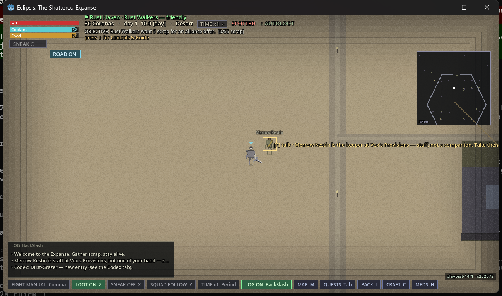
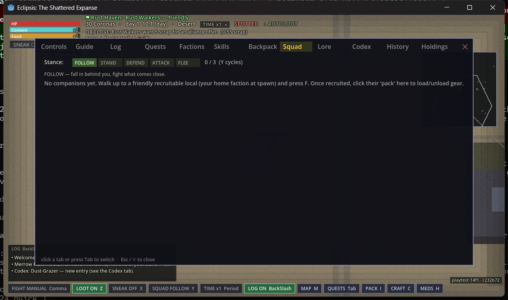
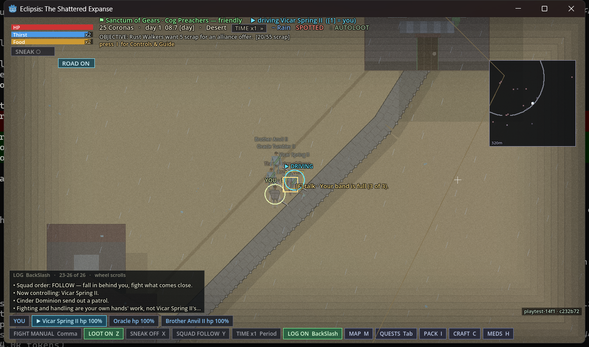
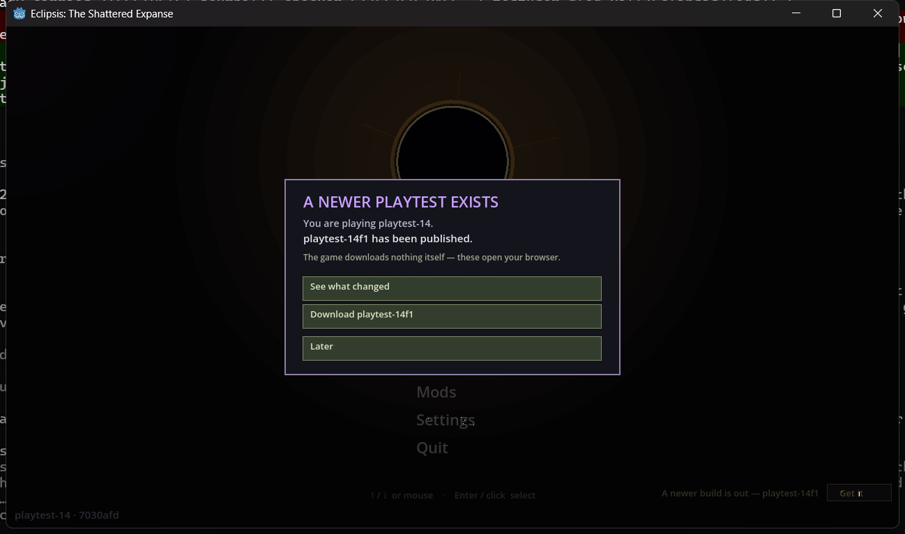

A follow-up cut to playtest 14, made for one report: "my companion is not following me."
The companion was the shop's keeper, put in the squad by the start and skipped by the
formation rule for holding a job, and nothing in the game said so. This build takes staff out
of the squad, makes every refusal and every non-follow say its reason, gives a driven
companion the same hands as your own body, and writes a journal a tester can read. This
report says what was checked on the shipped archive, on the owner's own save, and what was
not.
Cleared
Play it. The owner's own day-1 Failing Bakery save, the one the report came
from, was opened on the release build before he touched it: the keeper left the squad with one
line saying she is staff, she kept her job and her counter in the file the build wrote, and the
second load said nothing. A companion was recruited on the shipped build, ordered away and
told to stand, driven by the mouse and the run key, and refused when the band was full, each
time with the sentence on screen and the same event in the journal. Two small things were
found in the journal's wording and are listed; neither changes play.
stamp playtest-14f1 · c232b72 ✓ one line on the title, the same on the HUD, the same in the log and on every journal line windows eclipsis_playtest-14f1_windows_x86_64.zip 2377d8195964473f1be76f6d2486e203d94ba06c644b43e2599dc631e930f256 ✓ macos eclipsis_playtest-14f1_macos_universal.zip bfdd60eed1336eb900cb2459a743d5a7f27f680e12e1ff1d27afea5ad9506aea ✓ linux eclipsis_playtest-14f1_linux_x86_64.tar.gz 0599352a1de0db866a8b1e413db71290a64a0d43ce7716c2be22814d932bbc1f ✓ checked sha256 of each downloaded file against the release body, byte for byte; the macOS archive's binary is stored executable and the README inside carries the Gatekeeper steps
What was actually proven
Three tiers, as before. The top one is the only one that counts as a promise.
Verified on the shipped buildthe release archive, launched and driven like a player would, on a copy of the owner's real save directory
The build says which build it is. Title bottom-left and the log both read playtest-14f1 · c232b72; the first line of the journal carries the tag and the commit.
Playtest 14 finds playtest 14f1. The previous build, booted on a copy of the owner's save directory, put up the card naming both builds; Later closed it, the file recorded it, and the second boot showed only the quiet "Get it" line.
The keeper leaves the squad, once. On load the log said "Merrow Kestin is staff at Vex's Provisions, not one of your band — she keeps the counter and the squad walks without her." The Squad tab read 0 of 3 with no row for her. The autosave the build wrote on quit has no companions and one crew row: Merrow Kestin, keeper. Opening that file again said nothing and changed nothing.
Hovering says why before you press F. Over the keeper: "Merrow Kestin is the keeper at Vex's Provisions — staff, not a companion. Take them off the counter first." Over a guard: "holds a post for the Rust Walkers." Over a stranger with a full band: "Your band is full (3 of 3)." Over your own companion: "Ally — follows you."
Recruiting works and refusing is spoken. Three warriors of the home faction asked to join and joined ("won over and falls in beside you (1/3)" through "(3/3)"); the fourth was refused with the full-band sentence, and the save the build wrote holds exactly the three.
A squadmate on an order says so once. Sent somewhere by right-click, Vicar Spring II produced one line two seconds later: "walking an order of their own — let it finish, or send them somewhere else." When the order finished, formation resumed. Told to stand with Y, every row on the Squad tab read "STANDING — Y for FOLLOW" and no per-member line was spoken; the squad-wide "Squad order: STAND" line was.
Driving a companion answers the mouse and the run key. Key 2 took Vicar Spring II ("Now controlling"); a held right button walked the driven body toward the cursor, which playtest 14 ignored; Shift registered as a sprint on the driven body and it kept moving. Pressing Space while driving said, once: "Fighting and handling are your own hands' work, not Vicar Spring II's — press 1 to take your body back."
The Controls tab tells the truth about Y. "cycle squad stance (FOLLOW / STAND / DEFEND / ATTACK / FLEE)". Playtest 14 said it toggled two.
The journal is written as promised. One JSON object per line, ASCII, eleven fields in a fixed order, flushed as it goes: the game was killed one second after a keypress and that keypress was the last line on disk. F12 wrote a mark with a numbered frame file beside it and the toast "Marked bug #1 — frame saved." The manual save, the five-minute autosave, the save on quit and one closing line all appear, in that order, and the file a tester tails is a byte-for-byte copy of the session's own.
The clock has not moved. The HUD went from 10.0 to 12.8 in five and a half minutes (a game hour every two), and the autosave came 306 seconds after the load.
Verified against sourceheadless on the landed commits, seed 0x510E5A, before and after the fix
The keeper repair, on the owner's exact file, three loads deep. On the first version of the fix (8a383a3) the repair ran before the venues existed, decided the counter was no longer his, cleared her job and left her in the squad as a real companion — found by reading the file rather than the check, reported, and fixed twice over (the order of the load, and the flag that let a later save drop her from both lists). On the cut commit the file the first load writes, the second load, and a third load after another save all agree: squad empty, keeper at the counter, one line the first time and silence after.
The five reasons a squadmate will not fall in (in transit, posted, on an order, standing, behind a wall) each have a sentence, a Squad-tab tag and a journal id; the journal id is the same word the code uses.
Who can be asked at all is one function with thirteen answers, consulted by the hover label, the F press and the inspect card; the flag is data, false by default for slaver guards, overseers, slave traders and bosses.
Not tested on the shipped buildnamed, with the figure from source where there is one
How much faster a driven companion runs. The run key registered and the body moved; the walk-to-run ratio was not measured on the archive. Source asserts 1.55 to 1.85 against a factor of 1.7.
Three of the five non-follow reasons (posted, in transit, behind a wall) were read in source, not driven.
Pressing F on the keeper herself, and the three ways to make someone recruitable (release from a post, free a captive, become friendly). The hover sentence for her was measured; the press was not.
The flicker. Measured on source as the following body having no route out of a house; not driven at ×8 on the archive. If you see it, press F12 — that is what the mark is for.
macOS on a browser download. Structurally right and the README carries the Gatekeeper steps; the double-click on a Mac is still the owner's to do.
Linux beyond the archive. Hash and permissions only.
The same save, before and after
The owner's day-1 Failing Bakery save is the case this build was cut for. Read off the file the build wrote, not the screen.
field
playtest 14 opened it
playtest 14f1 opened it
companions in the squad
Merrow Kestin, job keeper (the shop's own staff)
none
crew on Vex's Provisions
none listed
Merrow Kestin, keeper, same post
what the game said
nothing; she stood at the door and never took a step
one line: she is staff, she keeps the counter, the squad walks without her
hovering over her
a talk prompt
the reason she cannot be recruited, and what would change it
opening it a second time
—
silent; the file is unchanged
a flag in the file
—
none; the repair is safe to run every time because the save is written from the repaired lists

On load. The staff line in the log; the hover label over Merrow says why she cannot be asked.

The Squad tab. 0 of 3. The keeper is not a row.
A companion, recruited, ordered, driven
A fresh Wanderer on the shipped build. Warriors of the home faction were placed beside the player with the in-game console so the recruit could be repeated; everything after that is the game as a player meets it.
step
playtest 14
playtest 14f1
recruit refused
"isn't convinced" or "No one in reach"
the sentence names the reason ("Your band is full (3 of 3).") and the hover shows it before F
companion sent on an order
silently out of formation
"walking an order of their own" once, two seconds in; formation resumes when it ends
Y to STAND
a stance line
the same line, and every Squad row tagged "STANDING — Y for FOLLOW"
driving: right button held
the driven body did not move
walks toward the cursor
driving: Shift
no run on the driven body
sprint registers on the driven body
driving: Space
nothing
"Fighting and handling are your own hands' work … press 1 to take your body back."
Told to stand. Three rows, three tags, no three lines in the log.

Space while driving. The game says what it will not do and how to get your hands back.
The journal
What the game writes in logs/journal.jsonl under its user folder, read straight off the file the shipped build wrote.
moment
line
launch
session/start with the version, commit, tag, your OS and GPU, and where the journal is
Continue
session/loaded with the file's path, size and checksum, then session/world with the seed, scenario and the 2880-second day
a squadmate skipped
order/formation_skip with the reason word, the sentence, and one note two seconds later
Y
stance/set from and to
key 2 / key 1
drive/switch from and to
F12
mark/bug with a number, the frame file's name, your position, who you were driving, and the last events; the frame is under logs/marks/
saves
save/manual, save/autosave with the path and byte count
quit
the autosave, then one session/quit as the last line; a crash leaves no quit line and every earlier line intact
Two things to fix in it, neither of which changes play: a refusal for a full band carries the
journal id standing where the sentence says the band is full, and the "could join
you" note ends with two full stops. Both are reported.
F12. "Marked bug #1 — frame saved." The frame is on disk under the same number.

Playtest 14 finds this build. The card names both; Later closes it once.
Sources
claim
where it was read
artifact checks above
release build c232b72, driven on copies of the owner's real save directory taken 4 September before any 14f1 binary ran; frames, the save files it wrote, and its journal
the keeper repair, before and after
the owner's autosave opened headless on 8a383a3 (wrong branch), b8e0f6d and c232b72 (right), three loads each
the journal contract
a checker run over the shipped build's journal: shape, closed set of kinds, order, marks on disk, no per-frame spam; a hard kill for the flush